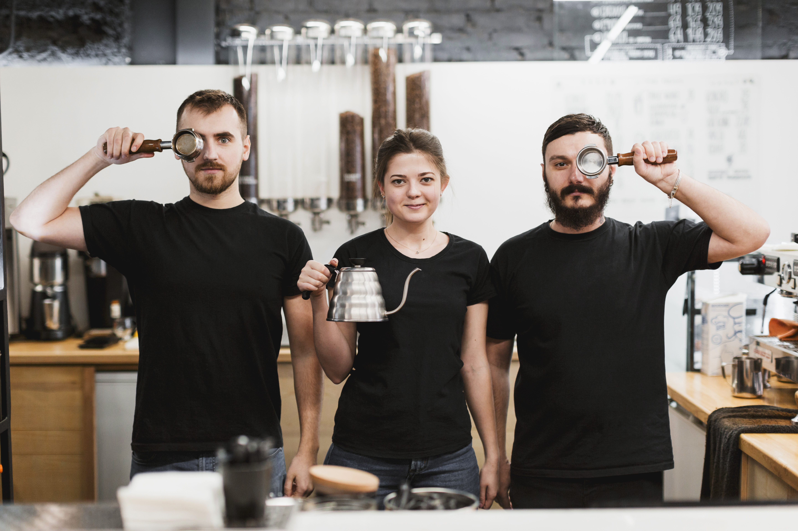

Tentang Kopi Nusa
Kopi Nusa bermula dari kecintaan kami terhadap biji kopi lokal nusantara. Berdiri di Pekalongan, kami berkomitmen untuk menyajikan pengalaman minum kopi yang otentik, memberdayakan petani lokal, dan menjadi ruang diskusi yang hangat bagi masyarakat.

Nilai-Nilai Kami
- Lokal & Otentik: 100% menggunakan biji kopi dari petani Indonesia.
- Kualitas Terjaga: Proses penyeduhan standar tinggi untuk cita rasa maksimal.
- Ramah & Nyaman: Tempat singgah yang nyaman untuk semua kalangan.